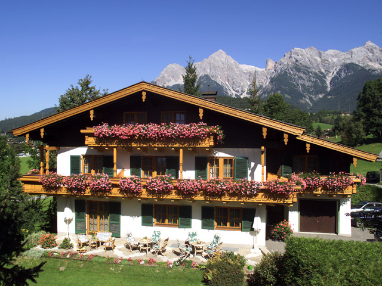
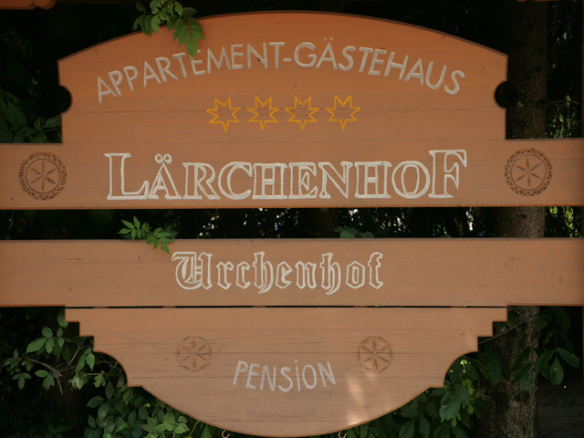
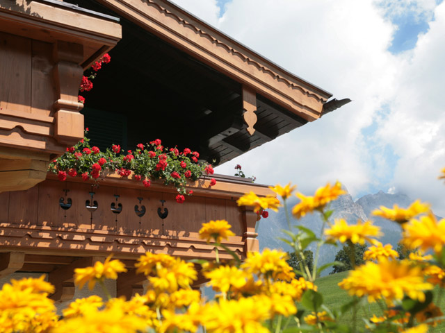
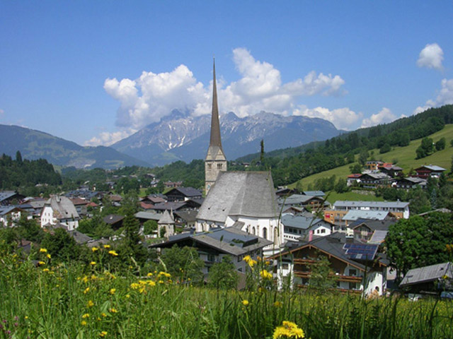
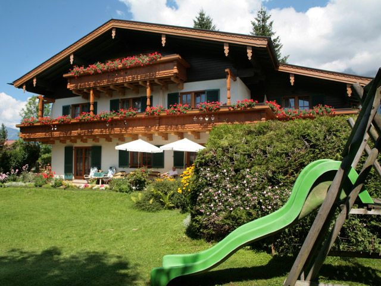

Doppelzimmer
1 Doppelbett · Balkon
Belegung: 1 - 2 Personen. Verpflegung: Frühstück. Pro Person und Tag ab EUR 42,00.

Pension Urchenhof, Zimmer und Ferienwohnungen in Maria Alm am Hochkönig im Salzburger Land.
Sie finden unseren Familienbetrieb mit komfortablen Zimmern und Ferienwohnungen am Ortsrand von Maria Alm, ruhig und idyllisch gelegen und doch der ideale Ausgangspunkt für Ihre Aktivitäten - ob im Sommer oder im Winter.
Unser Haus liegt ruhig und sonnig am Ortsrand von Maria Alm - an der Talstation des Natrun-Liftes. Unsere Pension befindet sich gleich neben dem Natrunlift und damit direkt am Einstieg in Hochkönigs Winterreich.
Ebenso ist die Frühstückspension Urchenhof Basis für gemütliche Spaziergänge, Wanderungen, Bergtouren, Mountainbike- und Radtouren. Auch ein Golfplatz und viele andere Sport- und Freizeitanlagen befinden sich in unmittelbarer Nähe.
Direkt neben unserer Pension befindet sich ein Speiserestaurant, mehrere weitere gutbürgerliche Gasthäuser und Restaurants sind bequem zu Fuß erreichbar. Supermärkte und Geschäfte finden Sie ebenfalls in unmittelbarer Umgebung.




Wir möchten unseren Gästen einen selbstbestimmten und maßgeschneiderten Aufenthalt ermöglichen. Wählen Sie aus 1 Doppelzimmer, 2 Mehrbettzimmern und 3 Ferienwohnungen.
Belegung: 1 - 2 Personen. Verpflegung: Frühstück. Pro Person und Tag ab EUR 42,00.

Belegung: 2 - 3 Personen. Verpflegung: Frühstück. Pro Person und Tag ab EUR 42,00.
Belegung: 2 - 4 Personen. Verpflegung: Frühstück. Pro Person und Tag ab EUR 42,00.

Diele, Küche, Wohnzimmer mit Doppelcouch, Bad oder Dusche, 2 WC und Balkon. Pro FEWO und Tag ab € 69,00.

Diele, Wohnküche, Dusche/WC, Bad/WC, Balkon mit Mansarde. Pro FEWO und Tag ab € 98,00.
Skipass inklusive - bitte geben Sie bei Ihrer Anfrage die gewünschte Pauschalenvariante an.
Buchbar von Saisonbeginn bis 21.12.2025
€ 690,50 / Person
Alternativ im 2-er Apartment ohne Verpflegung: € 1.303,00 auf Basis 2 Personen.
10.01. - 31.01.2026
€ 717,- / Person
Alternativ im 2-er Apartment ohne Verpflegung: € 1.356,00 auf Basis 2 Personen.
Buchbar vom 07.03.2026 bis Saisonende
€ 690,50 / Person
Alternativ im 2-er Apartment ohne Verpflegung: € 1.303,00 auf Basis 2 Personen.
Skispaß für die ganze Familie - auf Anfrage.
Bitte geben Sie die gewünschte Pauschalenvariante an.
Best Ager Week: Saisonbeginn bis 24.12.2025 und 14.03. - 21.03.2026
Gratis Skipass für Jungebliebene, Jahrgang 1966 und früher geboren.
€ 357,- im Doppelzimmer · € 630,- im Apartment
Bring a Friend: 1+1 gratis · 21.03. - 28.03.2026
7 Übernachtungen im Doppelzimmer inkl. Frühstück und Abgaben, 2 Stück 6-Tages-Skipässe, 1 Tag gratis Skitest und 1 Tag gratis Skiguiding für eine Person.
€ 1.128,00 Basis 2 Personen
Alternativ im 2-er Apartment: € 1.044,00 auf Basis 2 Personen.
Zauberhafter Winterspaß im Skigebiet Hochkönig: ein Traum für Skifahrer, Snowboarder sowie Carver und Tourenskifahrer.
34 Seilbahn- und Liftanlagen und 150 km Pisten auf einer Höhe von 860 bis 1.900 m warten auf Sie in einer der schönsten Skiregionen der Alpen.


Erleben Sie Ihren unabhängigen Urlaub in der gemütlichen Atmosphäre unseres Ferienhauses im Ortsteil Hintermoos. Im Sommer ein idealer Ausgangspunkt für Wanderungen, im Winter eine heimelige Bleibe in unmittelbarer Nähe zum Skigebiet.
Das neue Ferienhaus befindet sich am Waldesrand in ruhiger und sonniger Lage. Über eine Haushälfte erstreckt sich die 70 m² große Ferienwohnung, bestehend aus Diele, Küche, Wohnzimmer, Wintergarten, 2 Schlafzimmern, Dusche/WC und Terrasse.
Preis auf Anfrage